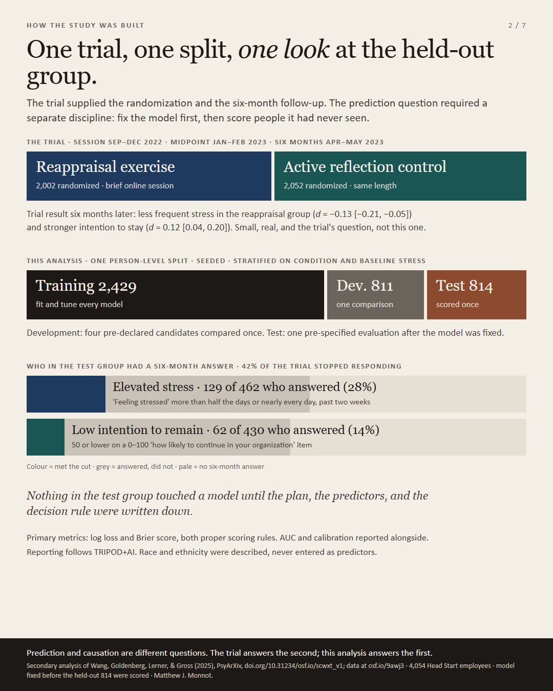
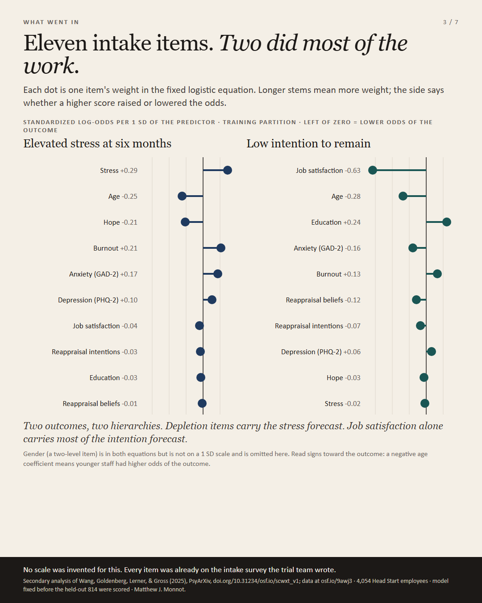
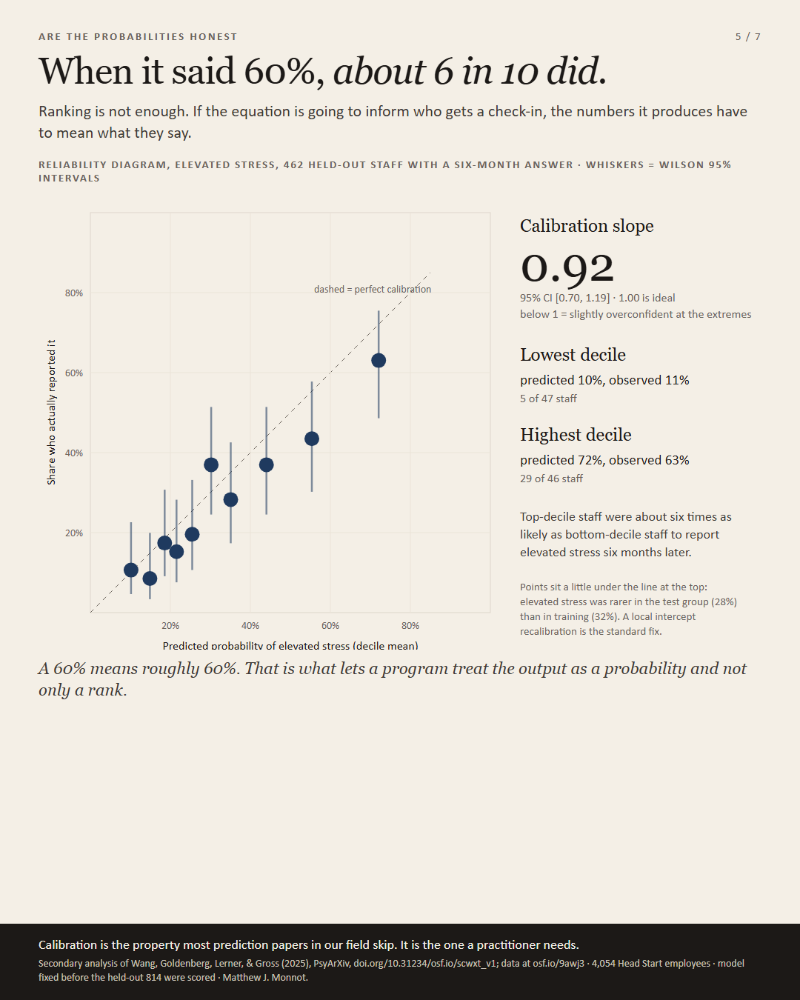
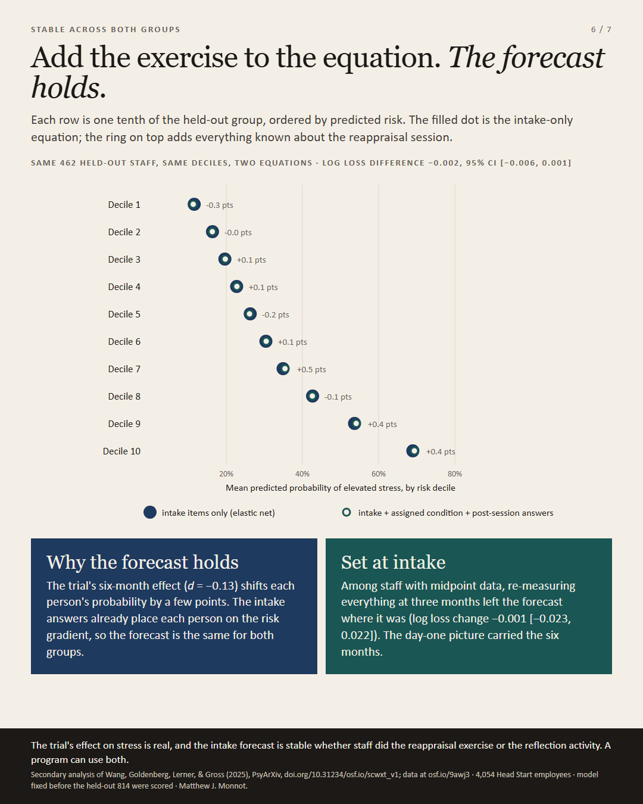
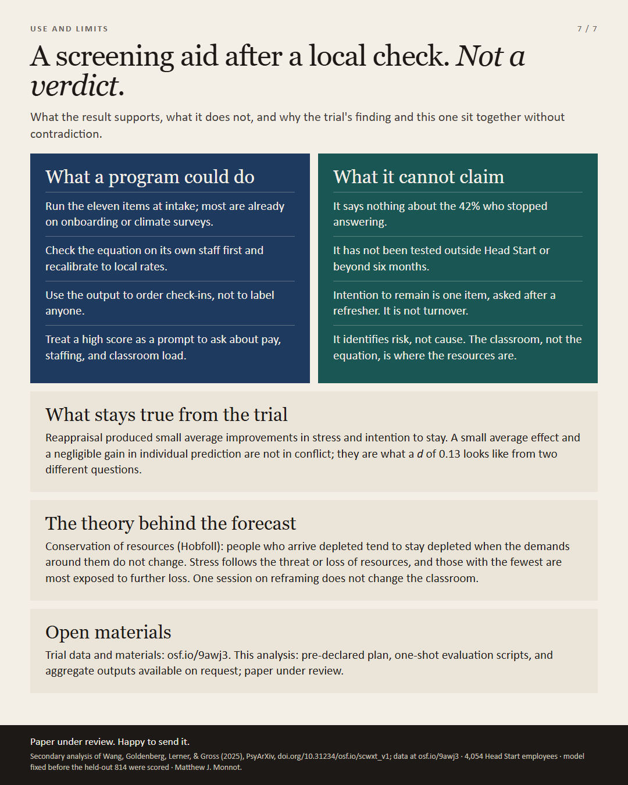

Head Start · secondary analysis · held-out test n = 462 (stress)
Eleven questions on day one sorted helping professionals by who would be in distress six months later.
On day one, eleven intake questions sorted 4,054 Head Start employees by who would report elevated stress six months later. In the lowest-risk tenth, 11 in 100 did; in the highest-risk tenth, 63 in 100 did, with the gradient running in order across all ten groups. The numbers come from a strict secondary analysis of a public randomized trial: the model was fixed before the held-out partition was scored once.
![Infographic on cream paper. Headline: Eleven questions on day one sorted helping professionals by who would be in distress six months later. A large ROC curve for elevated stress on 462 held-out staff: the oxblood curve rises above a dashed coin-flip diagonal, the area under it is shaded and labelled AUC .72 [.67, .77], a bootstrap band surrounds the curve, and a marked point reads Accept 30 false alarms per 100 well staff, and the equation catches 59 of 100 who became stressed. Axes read Of 100 staff who stayed well, how many get flagged anyway and Of 100 staff who became stressed, how many the equation catches. A note at the top-left corner reads a perfect forecast would reach this corner. A smaller green ROC for low intention to remain (AUC .70 [.63, .77]). Across the full width below, ten numbered bars show the same held-out staff sorted into tenths by day-one score, with the share who reported elevated stress at six months written on each bar: 11, 9, 17, 15, 20, 37, 28, 37, 43, 63. Three findings: .72 held-out AUC; calibration slope 0.92; the same forecast whether staff did the reappraisal exercise or the reflection activity. Footer: secondary analysis of a randomized trial (Wang, Goldenberg, Lerner, and Gross, 2025, PsyArXiv, doi.org/10.31234/osf.io/scwxt_v1; data at osf.io/9awj3), prediction on held-out staff who completed the six-month survey, a forecast not an effect of the exercise.](linkedin/stress-turnover-headstart-linkedin.png)
The study in brief
This page reports a secondary analysis of a randomized trial of 4,054 Head Start employees (95% women, mean age 43). Participants were split once into training, development, and test partitions in a 60/20/20 ratio (2,429 / 811 / 814). Models were fit and tuned on the training partition, compared once on the development partition, and the retained equation was scored once on the test partition it had never seen.
On the held-out partition, 462 staff had a numeric six-month stress item (129 met the elevated-stress cut) and 430 had a numeric intention-to-remain item (62 met the low-intention cut). Results apply to staff who completed the six-month survey.
Findings
- Elevated six-month stress (discrimination): AUC .72 [ .67, .77 ] on the held-out partition.
- Calibration: slope 0.92 [ 0.70, 1.19 ]. When the equation assigned a probability, observed rates tracked it in the grouped checks reported in the paper.
- Log loss versus the training base rate: 0.532 versus 0.596 for the intercept-only model; paired difference −0.064 [ −0.099, −0.029 ].
- Low intention to remain: AUC .70 [ .63, .77 ] on 430 held-out staff with a six-month answer.
- Both groups of the trial: Adding assigned condition and immediate post-session scores to the baseline elastic-net specification changed test log loss by −0.002 [ −0.006, 0.001 ] relative to the baseline elastic-net comparator. The day-one forecast was the same whether staff did the brief reappraisal exercise or the reflection activity.
- Day-one risk tenths (held-out stress label): share who reported elevated stress at six months, lowest to highest tenth: 11, 9, 17, 15, 20, 37, 28, 37, 43, and 63 per 100.
Already-high stress and younger age carried the most weight for later stress; lower job satisfaction carried most of the weight for low intention to remain, in the fixed equations fit on the training partition.
Carousel cards
Seven slides from the LinkedIn document post





What this is and is not
- This is a forecast from day-one measures, not an estimate of the reappraisal exercise’s causal effect on six-month stress.
- Estimates describe staff who completed the six-month survey; 42% of the trial stopped responding, with no reliable difference between the two activities.
- The sample is one program network in one program year; a program elsewhere should recalibrate to local base rates before acting on probabilities.
- Outcomes and predictors are self-report from the same participant; intention to remain is a stated intention, not administrative turnover.
- The source trial’s own six-month effects are real and separate: less frequent stress in the reappraisal group (d = −0.13) and stronger intention to stay (d = 0.12). The intake forecast sits alongside those results; it does not depend on which activity staff received.
Source and status
Wang, K., Goldenberg, A., Lerner, J. S., & Gross, J. J. (2025). An emotion regulation intervention increases long-term well-being among education workers [Preprint]. PsyArXiv. https://doi.org/10.31234/osf.io/scwxt_v1
Trial data and materials: https://osf.io/9awj3/
Secondary analysis: Matthew J. Monnot. Paper under review. Analysis plan, one-shot scripts, and aggregate outputs are available on request.